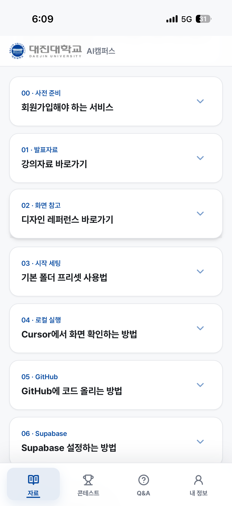
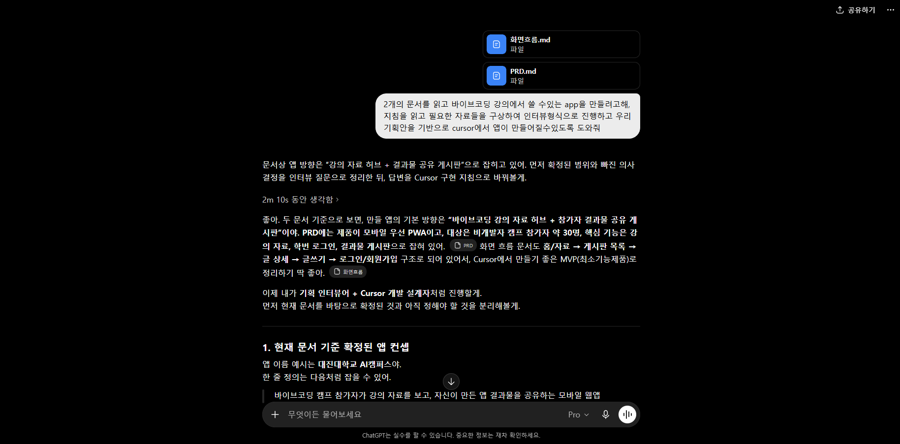
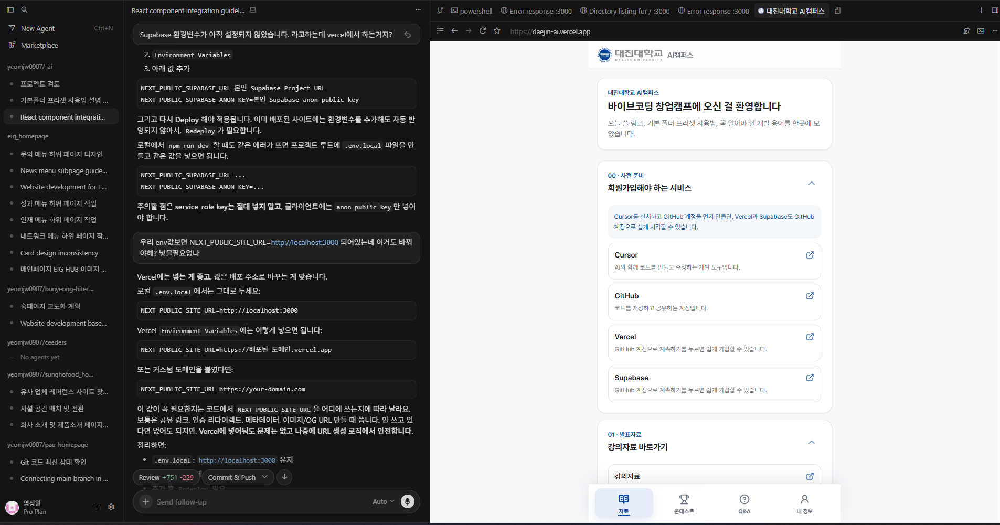
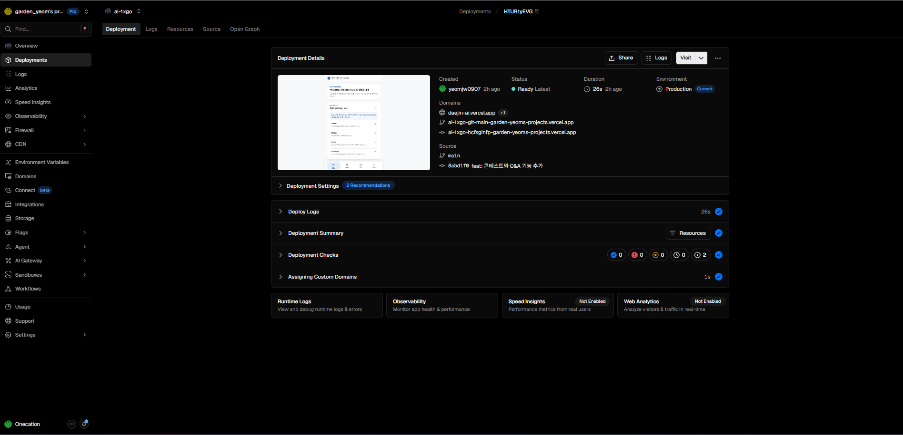
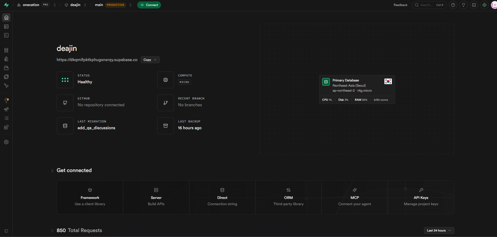

바이브코딩으로
앱 배포하기
코딩 경험이 없어도, 진짜 서비스를 만들고 배포까지
먼저, 오픈톡방에 들어오세요
오늘 공지·자료 공유·질문은 전부 이 톡방에서 — 막히면 여기에 캡처를 올리면 됩니다

바이브코딩이란
무엇인가?
코딩을 몰라도 만들 수 있다는 말, 진짜일까요?
바이브코딩이란 무엇인가?
개발의 진화 과정
기술이 한 단계 진화할 때마다, 더 많은 사람이 만들 수 있게 됐습니다
말 한마디가, 이렇게 코드가 됩니다
자연어로 요청 → AI가 작성한 코드 화면
검색의 시대에서, 대 딸깍의 시대로
예전엔 스택오버플로우를 뒤져 답을 "찾았다" — 이제는 AI에게 또렷이 요청하면 "만들어집니다"

"답을 검색하던 곳"이 비어가고 있습니다
개발자들의 Q&A 성지 스택오버플로우 — ChatGPT 등장 이후 질문 수가 급감했습니다

출처: Stack Overflow via StackExchange (Chartr)
"바이브코딩"이라는 새로운 방식
"많은 인력"보다 "또렷한 기획"의 시대로
소수 인원으로 운영되는 AI 기업 리더보드 — 지금 바로 열어보기
leanaileaderboard.com배출을 넘어, 실제 큰 매출을 내는 단계
"딸깍"되는 건 일부입니다
서비스 하나가 나오기까지 — 이 전체 흐름 중 자동화되는 건 개발 언저리뿐
개발이 요리라면, 기획은 레시피
좋은 재료(AI)가 있어도, 레시피가 엉성하면 음식은 망합니다
먹을 사람이 뭘 원하는지 먼저
무엇을·어떻게 — 오늘의 핵심
재료를 실제 음식으로 — 상당 부분 "딸깍"
만든 걸 알리고 쓰게 만들기
써보고 받은 피드백으로 다시 다듬기
AI에게 잘 말하는 법
"스터디 앱 만들어줘"(막연) → 또렷하게 쪼개서 요청하면 결과가 달라집니다
대상 사용자
핵심 기능
해결할 문제
구체적 구성
톤·분위기
이 강의를 위해, 진짜 앱을 만들었습니다
대진대학교 AI캠퍼스 · 홈 화면에 설치되는 PWA

이 앱은, 이렇게 만들었습니다
기획 → 개발 → 배포 → 데이터까지 — 똑같은 4단계로

① 기획
② 개발
③ 배포
④ 데이터오늘 쓸 도구 5종, 역할이 다릅니다
식당 하나를 차린다고 생각해보세요 — 도구마다 맡은 역할이 다릅니다
무엇을 팔지 정합니다 — 아이디어를 또렷한 기획(레시피)으로.
ChatGPT · Claude
식당이 들어설 터를 잡습니다 — 코드를 저장·기록(버전 관리)하고, 배포의 출발점.
Git · GitHub
레시피대로 실제 요리 — 말로 시키면 코드로 만들어줍니다.
완성한 요리를 손님에게 — 인터넷에 올려 누구나 접속하게.
재료를 신선하게 보관 — 회원·글·좋아요 데이터 저장 + 로그인.
서비스로 사람을 모으는 방법은, 생각보다 많습니다
결국 '가치를 준다'는 것 — 돈을 버는 방식엔 이런 15가지가 있습니다
좋은 서비스는, 이 3단계에서 나옵니다
거창한 아이디어가 아니라 — 가까운 일상에서 출발합니다
사람들의 하루를 잘게 쪼개 들여다본다
어디서 시간·돈·재미가 새는지 따져본다
그 불편을 해결하는 서비스로 잇는다
하루를 쪼개서 들여다보기
큰 흐름(왼쪽)을 잘게 쪼개면(오른쪽) — 사이사이 불편이 보입니다
각 행동을, 5가지 기준으로 따져보기
"이 행동에 서비스를 끼우면 — 무엇이 좋아질까?"
시간을 줄여줄 수 있나?
돈을 아껴줄 수 있나?
돈을 벌게 해줄 수 있나?
재미를 줄 수 있나?
성장(학점)을 도울 수 있나?
불편을, 서비스로 — 대진대 학생용 예시
관찰한 행동(왼쪽)에 → 딱 맞는 서비스(오른쪽)를 붙입니다
이제, 내 하루로 해봅시다
남의 사례 말고 — 내 일상에서 서비스를 찾아냅니다
AI가 인터뷰해서, 기획 문서를 채워줍니다
바로 쓰지 말고 — 충분히 묻게 한 뒤, 양식에 맞춰 받습니다
기획 완성! — 문서를 한 폴더에
바탕화면에 폴더를 만들고, 완성된 문서들을 모아 둡니다
GitHub 가입하기
코드를 올려둘 계정 — 개발자용 구글드라이브라고 생각하세요
빈 저장소(repository) 만들기
내 코드가 올라갈 '터' — 비어 있는 채로 먼저 만들어 둡니다
코드를 저장하고, GitHub에 올리기
작업을 기록하고 — 배포(Vercel)의 출발점이 됩니다
$ git init
$ git add .
$ git commit -m "첫 커밋"
# GitHub 저장소 연결 후
$ git push -u origin main
설치하고, 말로 개발하기
레시피(기획)를 주면 화면과 기능을 코드로 만들어줍니다
인터넷에 배포하기
빈 앱이라도 먼저 올려두고 — 바뀔 때마다 자동 재배포
데이터를 저장하고, 로그인 붙이기
회원·글·좋아요를 보관하고, 로그인을 처리합니다
오늘은, 해커톤입니다
학교생활을 더 낫게 만드는 앱을 만들어, 결과물 게시판에 올리세요
가장 많은 좋아요를 받은 학우에게 제공
점심 식사
식사 후엔 직접 만들어 봅니다 — 각자 앱을 만들고 배포까지
이제, 오전 가이드대로 직접
챗 AI→Git→Cursor→Vercel→Supabase 순서 그대로. 강사가 먼저 보여주고, 다 같이 따라합니다
강사가 화면으로 먼저 보여줍니다
각자 똑같이 — 막히면 손 드세요
자리로 찾아가 도와드립니다
"이 느낌으로" — 레퍼런스로 지시
맨바닥에서 고민 말고, 마음에 드는 화면을 보여주고 따라 만들게 합니다
직접 눌러보며, 하나씩 고치기
완벽 말고 동작 — 막히는 곳을 찾아 한 번에 하나씩 보완합니다
내 앱에 진짜 주소 달기
vercel.app 대신 — 기억하기 쉬운 나만의 도메인
"이런 것도 붙일 수 있다"
오늘 앱엔 넣지 않지만 — 결제도 모듈을 붙이면 됩니다
간편결제 · 카드 — 국내 서비스에 많이 씁니다
여러 결제수단을 한 번에 연동
진짜 앱처럼, 홈 화면에 설치
스토어 없이도 — 브라우저에서 "홈 화면에 추가"하면 앱이 됩니다 (PWA)
내 앱을, 캠프 앱에 올리기
아침에 본 그 게시판으로 돌아옵니다 — 이제 여러분이 채울 차례
막히면, 이 순서로
에러는 당연합니다 — 당황 말고 차례대로
대부분 답이 거기 있습니다
"이 에러 고쳐줘" + 붙여넣기
직전에 잘 되던 상태로
화면을 찍어 올리면 같이 봅니다
AI를 쓰는 법도, 단계별로 "전직"합니다
오늘 여러분은 바이브코딩 단계로 1차 전직했습니다
반복이, 다음 단계를 엽니다
오늘 한 과정을 기억하고 반복하면 — 자동화 워크플로우, 그리고 오케스트레이션까지
무엇을 만들지 또렷하게 정리하는 능력은 남습니다
바이브코딩으로
앱 배포하기
코딩 경험이 없어도, 진짜 서비스를 만들고 배포까지